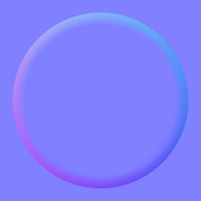
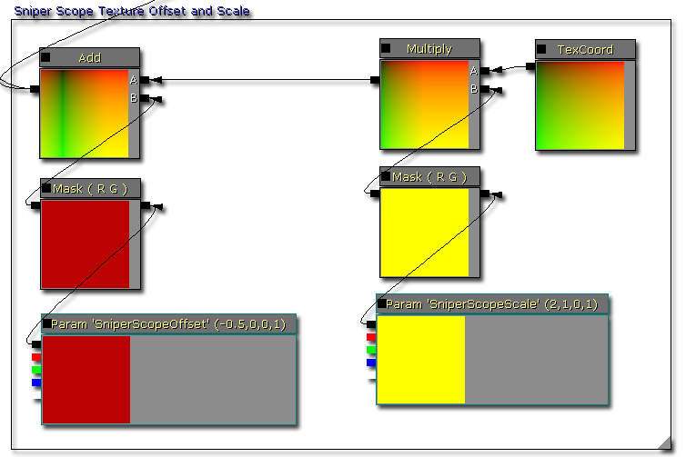
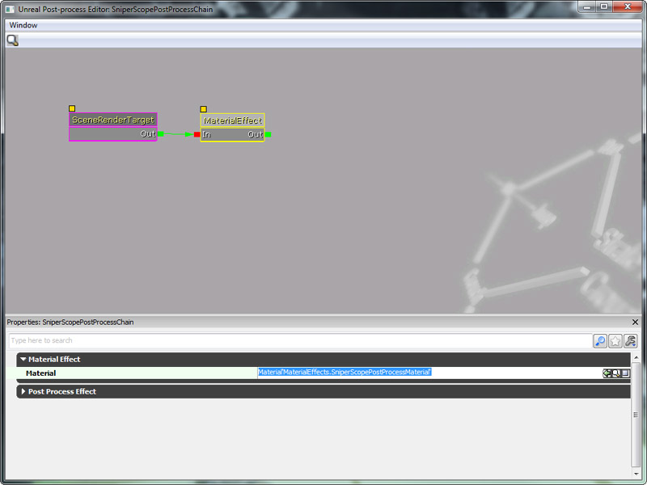
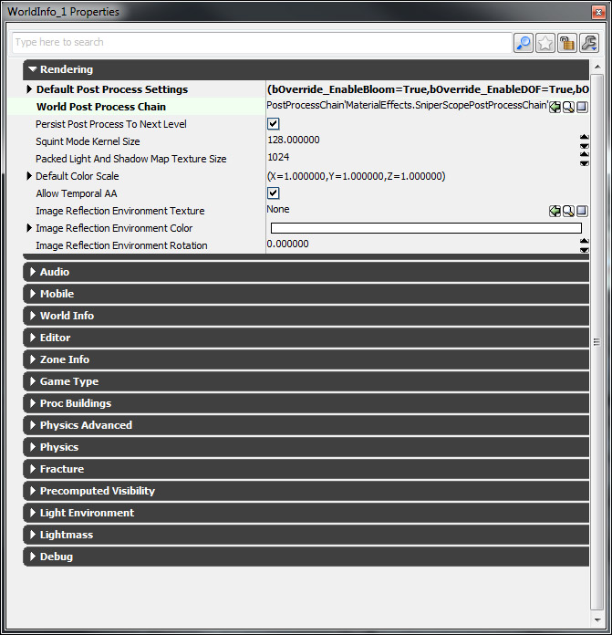
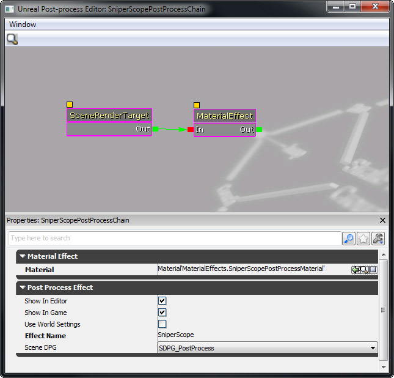
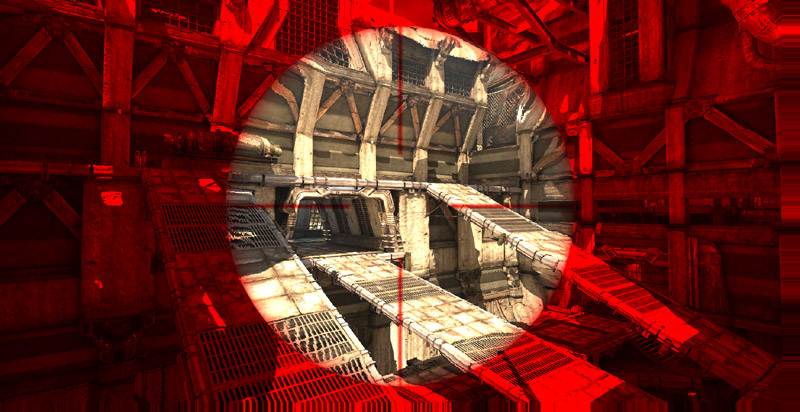

UDN
Search public documentation:
DevelopmentKitGemsHUDDistortionKR
English Translation
日本語訳
中国翻译
Interested in the Unreal Engine?
Visit the Unreal Technology site.
Looking for jobs and company info?
Check out the Epic games site.
Questions about support via UDN?
Contact the UDN Staff
日本語訳
中国翻译
Interested in the Unreal Engine?
Visit the Unreal Technology site.
Looking for jobs and company info?
Check out the Epic games site.
Questions about support via UDN?
Contact the UDN Staff
HUD 왜곡 추가하기
문서 변경내역: James Tan 작성. 홍성진 번역.
UDK 2011년 6월 버전으로 최종 테스팅, PC 호환
개요
화면에 왜곡을 주는 이펙트는 플레이어에게 피드백을 주는 데 정말 그만입니다. 어떤 종류의 무기에 맞았는지, 물속에 있는지, 스나이퍼 조준경을 통해 보고 있는지 등을 플레이어에게 알려줄 수 있는 것입니다. 이 UDK 젬에서는 스나이퍼 조준경을 예로 들어 보겠습니다.
포스트 프로세싱
언리얼 엔진 3 는 렌더 타겟 안에 화면 출력을 저장하며, 포스트 프로세싱을 사용해서 수정할 수 있습니다. 즉 렌더 타겟에 저장되므로, 렌더 타겟 수정에는 머티리얼 시스템이 사용된다는 뜻입니다. Post Process Effects Home KR (포스트 프로세스 이펙트 홈) 페이지, 더욱 자세히는 Post Process Materials KR (포스트 프로세스 머티리얼) 페이지를 참고해 주시기 바랍니다.
머티리얼 셋업하기
텍스처
우선 텍스처가 몇 필요합니다. 텍스처는 UI LOD Group 에 저장되어 있으며, Clamp 에 Address X 와 Address Y 가 설정되어 있습니다. 왜곡에 쓸 노멀맵입니다.
불투명에 쓸 알파맵입니다.
스나이퍼 조준경 텍스처 좌표
스나이퍼 조준경의 경우, 텍스처를 전체 화면에 걸쳐 늘이는 것은 바람직하지 못합니다. 스나이퍼 조준경은 화면 중앙에 오도록 하고 종횡비도 1:1 로 억제하는 것이 이상적이겠습니다. 이 작업은 머티리얼에서 텍스처 좌표를 조절하여 이뤄낼 수 있습니다.
- 텍스처 좌표를 곱하면 텍스처의 스케일을 백분율로 조절합니다. 예를 들어 0.5 는 텍스처의 50% 이며, 2.0 은 200% 입니다.
- 텍스처 좌표를 더하면 텍스처의 위치를 백분율로 조절합니다. 화면위 텍스처의 위치라기보다는, 텍스처를 처음 사용할 때 들여다보기 시작할 위치입니다. 이 값은 보통 0 이지만, 이 값을 조절하면 텍스처를 패닝하여 다른 픽셀 위치에서 시작하도록 할 수 있습니다. 우리의 경우 텍스처에 Address X 와 Address Y 가 클램핑(제한)되어 있어서 화면에 걸쳐 텍스처를 이동시킬 때 가장자리가 까맣게 나오는데, 스나이퍼 조준경에는 이상적인 것입니다.
스나이퍼 조준경 왜곡
'몰입감'을 높이기 위해서는 스나이퍼 조준경 렌즈 굴곡면을 약간 왜곡시켜 비추는 것이 바람직합니다. 그 방법은 Scene Texture Sample 에서 텍스처 룩업 좌표를 조절하는 것입니다. 노멀맵을 곱해주는 것으로 왜곡의 세기도 조절할 수 있습니다.
- 노멀맵을 스칼라 파라미터로 곱해주면 왜곡 세기를 쉽게 조절할 수 있습니다.

스나이퍼 조준경 착색
텍스처 오프셋과 왜곡을 마쳤으니, 이제 합쳐줄 시간입니다. 오패시티(불투명) 맵을 사용하여 Scene Texture Sample 두 버전을 선형 보간하면, 화면 위에 스나이퍼 조준경 패턴을 쉽게 만들어낼 수 있습니다.
- ScopeColor 의 RGB 값을 조절하여 스나이퍼 조준경 오버레이 색을 변경합니다.
- ScopeColor 의 알파값을 조절하여 스나이퍼 조준경 오버레이 세기를 변경합니다.
완성된 머티리얼

단순한 포스트 프로세스 체인 만들기
포스트 프로세스 체인은 언리얼 엔진 3 가 포스트 프로세싱 이펙트를 처리하는 데 사용하는 것입니다. 노드같은 트리를 사용하여 이펙트를 하나 하나 연쇄시켜, 디자이너도 새 포스트 프로세싱 이펙트와 다른 포스트 프로세싱 이펙트 모듈을 쉽게 결합시킬 수 있습니다. 이 시스템에 대한 상세 정보는 Post Process Editor User Guide KR (포스트 프로세스 에디터 사용 안내서), Post Process Effect Reference KR (포스트 프로세스 이펙트 참고서)를 확인해 주시기 바랍니다.
 이 머티리얼 이펙트를 테스트하려면, 콘텐츠 브라우저에서 New 버튼을 클릭하여 새로운 Post Process Chain 을 만듭니다.
이 머티리얼 이펙트를 테스트하려면, 콘텐츠 브라우저에서 New 버튼을 클릭하여 새로운 Post Process Chain 을 만듭니다.

포스트 프로세스 체인을 만든 후, 콘텐츠 브라우저에서 그 아이콘에 더블클릭하면 포스트 프로세스 에디터가 열립니다. 빈 공간에 우클릭하여 뜨는 맥락 메뉴에서 Material Effect 를 선택합니다. 그러면 새로운 Material Effect 포스트 프로세스 노드가 생깁니다. Material Effect 포스트 프로세스 노드를 선택하고, Material 필드를 위에서 만든 Sniper Scope 머티리얼로 설정합니다.
Material Effect 포스트 프로세스 노드를 선택하고, Material 필드를 위에서 만든 Sniper Scope 머티리얼로 설정합니다.

언리얼스크립트에서 머티리얼 파라미터 수정하기
이 젬의 머티리얼 생성 부분에서 말했듯이, 조절해 줘야 하는 변수가 있습니다. 포스트 프로세스 체인 안에서 Material Effect 노드를 찾아 리퍼런스할 수 있으려면, Material Effect 노드 이름을 줘야 합니다. 이 작업은 다음과 같이 포스트 프로세스 에디터 안에서 이루어 집니다:

var MaterialInstanceConstant SniperPostProcessMaterialInstanceConstant;
function PlayerTick(float DeltaTime)
{
local MaterialEffect SniperPostProcessEffect;
local LocalPlayer LocalPlayer;
local LinearColor LC;
Super.PlayerTick(DeltaTime);
if (SniperPostProcessMaterialInstanceConstant == None)
{
Super.PlayerTick(DeltaTime);
// 로컬 플레이어, 포스트 프로세스 체인 저장을 구함
LocalPlayer = LocalPlayer(Player);
if (LocalPlayer != None && LocalPlayer.PlayerPostProcess != None)
{
// 포스트 프로세스 체인 머티리얼 이펙트 구하기
SniperPostProcessEffect = MaterialEffect(LocalPlayer.PlayerPostProcess.FindPostProcessEffect('SniperScope'));
if (SniperPostProcessEffect != None)
{
// 머티리얼 인스턴스 상수 새로 만들기
SniperPostProcessMaterialInstanceConstant = new () class'MaterialInstanceConstant';
if (SniperPostProcessMaterialInstanceConstant != None)
{
// 머티리얼 인스턴스 상수의 부모를 머티리얼 이펙트에 저장된 것에 할당
SniperPostProcessMaterialInstanceConstant.SetParent(SniperPostProcessEffect.Material);
// 머티리얼 이펙트가 새로 만든 머티리얼 인스턴스 상수를 사용하도록 설정
SniperPostProcessEffect.Material = SniperPostProcessMaterialInstanceConstant;
// 조준경 색 조절
LC.R = 1.f;
LC.G = 0.f;
LC.B = 0.f;
LC.A = 1.f;
SniperPostProcessMaterialInstanceConstant.SetVectorParameterValue('ScopeColor', LC);
}
}
}
}
}

내려받기

- 이 젬에 사용된 콘텐츠 SniperScope.zip 내려받기.
관련 토픽
- Materials And Textures Home KR 머티리얼과 텍스처 홈
- Material Editor User Guide KR 머티리얼 에디터 사용 안내서
- Materials Compendium KR 머티리얼 개론
- Post Process Effects Home KR 포스트 프로세스 이펙트 홈
- Post Process Materials KR 포스트 프로세스 머티리얼
- Post Process Editor User Guide KR 포스트 프로세스 에디터 사용 안내서
- Post Process Effect Reference KR 포스트 프로세스 이펙트 참고서